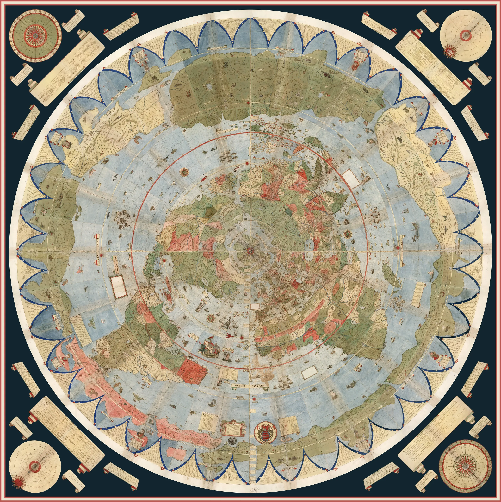
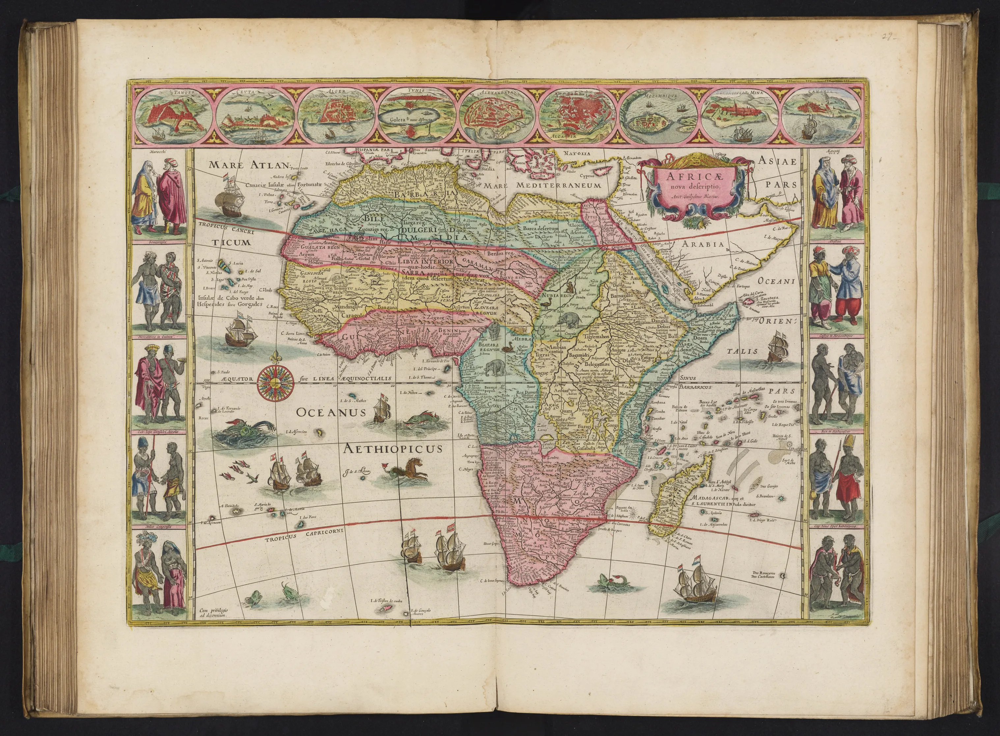
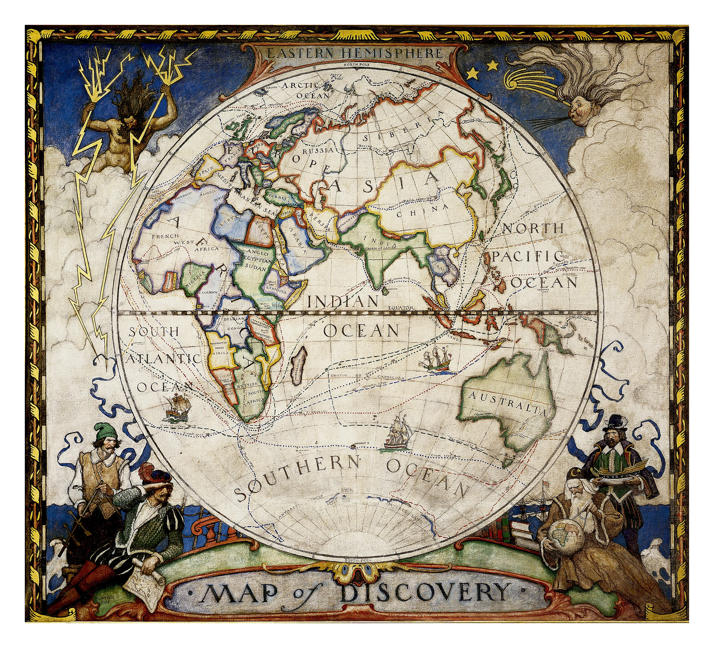
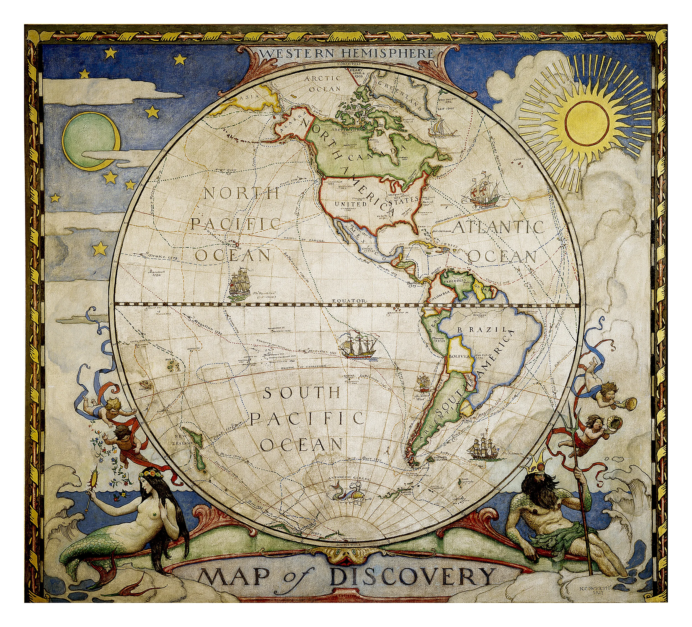

×

❮
❯

"Map of the World" by Urbano Monte (1587). One of the most unique cartographic achievements of the Renaissance and the largest known early world map from the 16th century.
David Rumsey Map Center Stanford University Libraries

"Africae nova descriptio"by Joan Blaeu(1665)
David Rumsey Map Center Stanford University Libraries

"Map of Discovery" by N.C. Wyeth (1928)
David Rumsey Map Center Stanford University Libraries

"Map of Discovery" by N.C. Wyeth (1928)
David Rumsey Map Center Stanford University Libraries